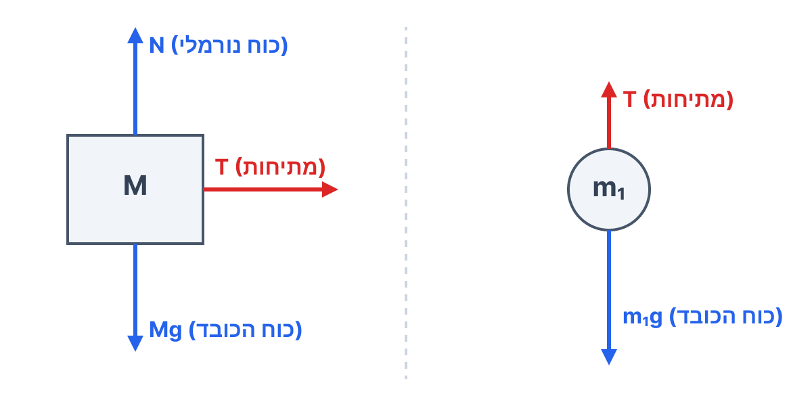
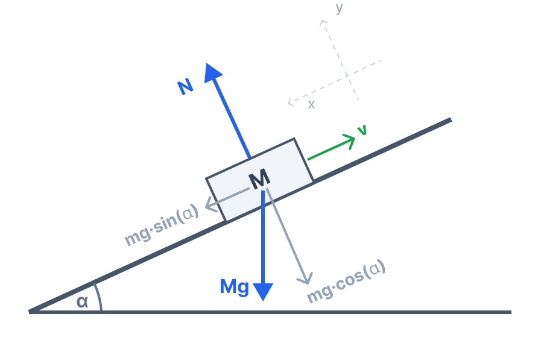

לא ניתן לטעון את תמונת השאלה. ודא כי הקובץ question-image.png קיים בתיקייה.
סעיף א' - תרשימי כוחות
א. מה נתון:
מערכת הכוללת תיבה בעלת מסה \( M \) הנמצאת על מסילה אופקית חלקה (כלומר מקדם החיכוך \( \mu = 0 \)). התיבה קשורה בחוט העובר על גלגלת וקשור למשקולת שמסתה \( m_1 \). המערכת שוחררה ממנוחה.
ב. מה מחפשים:
לסרטט שני תרשימי כוחות נפרדים (FBD): אחד עבור התיבה \( M \) ואחד עבור המשקולת \( m_1 \), ולציין את שם כל כוח.
ג. נוסחאות בשימוש:
\( \Sigma \vec{F} = m\vec{a} \)\( W = mg \)
ד. הצבה ופתרון:
נסרטט את כל הכוחות הפועלים על כל גוף תוך הקפדה על פרופורציות נכונות (למשל, עבור המשקולת שיורדת, כוח הכובד צריך להיות גדול מהמתיחות):

לא ניתן לטעון את התמונה image-1.png. ודא כי הקובץ קיים בתיקייה.
סרטוט הכוחות מופיע למעלה. שימו לב: על התיבה פועלים 3 כוחות, ועל המשקולת פועלים 2 כוחות.
טיפ מורה: זכרו כי כיוון שמדובר בחוט אידאלי (חסר מסה) וגלגלת אידאלית (חסרת מסה וחיכוך), גודל מתיחות החוט הפועל על \( M \) שווה בדיוק לגודל המתיחות הפועל על \( m_1 \). לכן סימנו את שניהם באותה האות \( T \).
סעיף ב' - הקשר בין המסות
א. מה נתון:
נתון כי גודל תאוצת המערכת לאחר השחרור הוא \( a = \frac{g}{4} \). מכיוון שהחוט נשאר מתוח ואינו נמתח, לגוף \( M \) ולמשקולת \( m_1 \) יש את אותו גודל תאוצה.
ב. מה מחפשים:
למצוא ביטוי אלגברי המקשר בין מסת המשקולת \( m_1 \) לבין מסת התיבה \( M \).
ג. נוסחאות בשימוש:
\( \Sigma F_x = m a_x \)\( \Sigma F_y = m a_y \)
ד. הצבה ופתרון:
נרשום את משוואות החוק השני של ניוטון עבור כל גוף בנפרד.
עבור התיבה \( M \) (נבחר את הציר החיובי ימינה, כיוון התנועה):
\[ \Sigma F_x = T = M \cdot a \]
עבור המשקולת \( m_1 \) (נבחר את הציר החיובי כלפי מטה, כיוון התנועה):
\[ \Sigma F_y = m_1 g - T = m_1 \cdot a \]
נציב את תאוצת המערכת \( a = \frac{g}{4} \):
\[ (1)\ \ T = M \left( \frac{g}{4} \right) \]
\[ (2)\ \ m_1 g - T = m_1 \left( \frac{g}{4} \right) \]
נציב את משוואה (1) לתוך משוואה (2):
\[ m_1 g - M \frac{g}{4} = m_1 \frac{g}{4} \]
נעביר את כל האיברים המכילים את \( m_1 \) לאגף אחד:
\[ m_1 g - m_1 \frac{g}{4} = M \frac{g}{4} \]
\[ m_1 \left( g - \frac{g}{4} \right) = M \frac{g}{4} \]
\[ m_1 \left( \frac{3g}{4} \right) = M \frac{g}{4} \]
נצמצם את הגורם המשותף \( \frac{g}{4} \) משני אגפי המשוואה ונקבל:
\[ 3 m_1 = M \]
\[ m_1 = \frac{M}{3} \]
הביטוי הנדרש: \( m_1 = \frac{M}{3} \).
טיפ מורה: מותר, רצוי ונוח להשתמש במשוואת תנועה של "מערכת שלמה" כדי לקצר תהליכים (למשל במציאת תאוצה). עם זאת, חשוב לזכור שכאשר אנו נדרשים לחשב כוח פנימי במערכת (כמו מתיחות החוט, שתכף נזדקק לה), לא נוכל למצוא אותו דרך משוואת המערכת. זו הסיבה שלרוב כדאי ובטוח יותר לנתח ולרשום משוואה לכל גוף בנפרד - ראינו שקל מאוד לחבר אותן לאחר מכן!
סעיף ג' - יחס המתיחויות בחוט
א. מה נתון:
ישנם שני מצבים למערכת: מצב של מנוחה (בו התלמיד מחזיק את המערכת והתאוצה היא \( a=0 \)) ומצב של תנועה לאחר השחרור (בו מצאנו מתיחות מתאוצת המערכת).
ב. מה מחפשים:
לחשב את היחס בין גודל המתיחות כשהמערכת במנוחה (נסמן \( T_{rest} \)) לבין גודל המתיחות לאחר שחרור המערכת (נסמן \( T_{motion} \)).
ג. נוסחאות בשימוש:
\( \Sigma F = 0 \) (למצב מנוחה)\( \Sigma F = ma \) (למצב תנועה)
ד. הצבה ופתרון:
נחשב תחילה את המתיחות במצב מנוחה. כאשר המערכת מוחזקת במקום ואינה מאיצה, סכום הכוחות על המשקולת \( m_1 \) הוא אפס:
\[ \Sigma F_y = m_1 g - T_{rest} = 0 \Rightarrow T_{rest} = m_1 g \]
כעת, נחשב את המתיחות בזמן תנועה מהמשוואה של \( M \) מסעיף ב':
\[ T_{motion} = M \frac{g}{4} \]
נציב את הקשר שמצאנו \( M = 3 m_1 \) לתוך הביטוי של \( T_{motion} \):
היחס בין מתיחות החוט במנוחה למתיחות בזמן תנועה הוא \( \frac{4}{3} \).
טיפ מורה: בואו נבין את הפיזיקה! כשהמערכת מוחזקת במנוחה, החוט "סוחב" על עצמו את כל משקל המשקולת (100% ממשקלה). אבל כשהמערכת משוחררת והמשקולת מאיצה למטה ו"נופלת" קצת, היא לא נשענת על החוט באותה המידה, ולכן החוט צריך להפעיל כוח קטן יותר (כאן, 75% מהמשקל). מתיחות במערכת מאיצה (כשגוף תלוי יורד) תמיד קטנה מהמתיחות הסטטית.
סעיף ד' - ניסוי שני: חישוב זווית השיפוע
א. מה נתון:
ניסוי שני: התיבה \( M \) מנותקת מהמערכת הקודמת. מעלים אותה למסילה משופעת חלקה (\( \mu=0 \)) והודפים אותה במעלה המסילה. נתון כי גודל תאוצת התיבה בזמן תנועתה הוא שוב \( a = \frac{g}{4} \).
ב. מה מחפשים:
לחשב את זווית השיפוע של המסילה, \( \alpha \).
ג. נוסחאות בשימוש:
\( \Sigma F_x = m a_x \)\( W_x = mg \sin \alpha \) (רכיב הכובד במקביל למישור)
ד. הצבה ופתרון:
נבחר מערכת צירים שבה ציר ה-\( x \) מקביל למסילה וכיוונו החיובי הוא במורד המסילה. על התיבה פועלים כוח הכובד והכוח הנורמלי בלבד (התיבה כבר נהדפה ולכן כוח ההדיפה סיים לפעול).

לא ניתן לטעון את התמונה image-4.png. ודא כי הקובץ קיים בתיקייה.
הכוח היחיד שפועל לאורך ציר ה-\( x \) הוא הרכיב המקביל של כוח הכובד:
\[ \Sigma F_x = W_x = M g \sin \alpha \]
נציב במשוואת החוק השני של ניוטון:
\[ M g \sin \alpha = M \cdot a \]
המסה \( M \) מצטמצמת (תאוצה על מישור חלק לא תלויה במסת הגוף):
\[ a = g \sin \alpha \]
התאוצה מכוונת תמיד כלפי מטה לאורך המישור. אנו יודעים שגודל התאוצה הוא \( a = \frac{g}{4} \). נציב זאת:
זווית השיפוע היא \( \alpha \approx 14.48^\circ \).
שימו לב: התיבה נעה במעלה המסילה, כלומר וקטור המהירות שלה מכוון למעלה. אבל וקטור התאוצה מכוון במורד המסילה, מנוגד לתנועה. לכן גודל המהירות קטן. אנו נמנעים מהמילה המבלבלת "תאוטה", ומבינים פשוט שהכוח השקול הוא בכיוון הירידה ולכן התאוצה בכיוון הירידה.
סעיף ה' - תאוצה בעצירה רגעית
א. מה נתון:
התיבה סיימה את עלייתה, נעצרת רגעית בשיא הגובה ומתחילה לנוע בחזרה למטה.
ב. מה מחפשים:
לקבוע האם ברגע העצירה הרגעית גודל תאוצת התיבה שווה לאפס, ולנמק את הקביעה.
ג. נוסחאות בשימוש:
\( \Sigma \vec{F} = m\vec{a} \)
ד. הצבה ופתרון:
הקביעה: לא, גודל תאוצת התיבה ברגע העצירה אינו שווה לאפס (אלא עדיין \( \frac{g}{4} \)).
נימוק פזיקלי: לפי החוק השני של ניוטון, התאוצה נגרמת אך ורק כתוצאה משקול הכוחות הפועל על הגוף באותו רגע (\( a = \frac{\Sigma F}{m} \)). התאוצה אינה תלויה במהירות הגוף.
ברגע העצירה (\( v = 0 \)), הכוחות הפועלים על התיבה לא השתנו: כוח הכובד עדיין מושך אותה למטה, ולכן הרכיב שלו לאורך המסילה (\( M g \sin \alpha \)) ממשיך לפעול באין מפריע. מאחר ששקול הכוחות אינו אפס, התאוצה בהכרח שונה מאפס וממשיכה להיות מוכוונת כלפי מורד המסילה.
קביעה: לא, גודל התאוצה אינו שווה לאפס. (נימוק מפורט מעלה המבוסס על שקול הכוחות שאינו מתאפס).
מלכודת קלאסית: תלמידים רבים נוטים לחשוב ש"מהירות אפס גוררת תאוצה אפס". זה שגוי לחלוטין! חשבו על כדור שאתם זורקים באוויר - בשיא הגובה המהירות מתאפסת לרגע, אך התאוצה היא עדיין \( g \) (תאוצת הנפילה החופשית) לאורך כל תהליך התנועה, כולל בשיא הגובה.
סעיף ו' - ניסוי שלישי: גוף בתוך התיבה
א. מה נתון:
בניסוי השלישי הוכנס גוף נוסף (נסמן מסתו \( m \)) לתוך התיבה \( M \). הגוף נקשר לדופן התיבה באמצעות חוט המקביל למסילה. התיבה והגוף משוחררים יחדיו ממנוחה ויורדים לאורך המישור המשופע.
ב. מה מחפשים:
למצוא מהו גודל המתיחות בחוט במהלך ירידת המערכת ולנמק.
ג. נוסחאות בשימוש:
\( \Sigma F = ma \)\( a_{system} = g \sin \alpha \)
ד. הצבה ופתרון:
ננתח את הבעיה: התיבה והגוף שבתוכה מהווים יחד מערכת שמשוחררת ממנוחה על מישור משופע ללא חיכוך. כפי שראינו בסעיף ד', כל גוף שישוחרר על מסילה כזו יאיץ בתאוצה השווה ל- \( a = g \sin \alpha \) במורד המסילה, ללא קשר למסתו.
לכן, המערכת כולה (התיבה \( M \) + הגוף הפנימי \( m \)) יורדת בתאוצה שגודלה \( a = g \sin \alpha \).
כעת, נתמקד רק בגוף הפנימי \( m \). כדי שהוא ינוע באותה תאוצה כשל התיבה (\( a = g \sin \alpha \)), נדרש ששקול הכוחות עליו במורד המישור יהיה בדיוק כוח שיקיים את החוק השני:
\[ \Sigma F_{\text{req}} = m \cdot a = m(g \sin \alpha) \]
אך כוח הכובד הפועל על הגוף הפנימי עצמו מספק בדיוק רכיב כוח בגודל זה במורד המישור: \( W_{m,x} = m g \sin \alpha \).
נרשום את משוואת התנועה המלאה של הגוף הפנימי. נניח שהחוט נמתח לאחור (למעלה המישור) ומפעיל כוח \( T \):
\[ m g \sin \alpha - T = m \cdot a \]
נציב את תאוצת התיבה \( a = g \sin \alpha \):
\[ m g \sin \alpha - T = m (g \sin \alpha) \]
\[ - T = 0 \Rightarrow T = 0 \]
גודל המתיחות בחוט שווה לאפס. (הנימוק מופיע מעלה: רכיב משקל הגוף מספק בדיוק את התאוצה הדרושה ללא צורך בכוח נוסף מהחוט).
טיפ מורה: תופעה זו היא וריאציה על מושג ה"חוסר משקל". כאשר אתם נמצאים במעלית שנופלת נפילה חופשית בתאוצה \( g \), אתם לא מרגישים את הרצפה ואינכם לוחצים עליה (הנורמל אפס). כאן, התאוצה המשותפת אינה \( g \) אלא \( g \sin \alpha \), אך העיקרון זהה: מאחר ששני הגופים "נופלים" במורד המישור באותה התאוצה החופשית, אין ביניהם שום דחיפה או משיכה פנימית, ולכן החוט רפוי.
נוסח השאלה המקורית
לא ניתן לטעון את תמונת השאלה. ודא כי הקובץ question-image.png קיים בתיקייה.